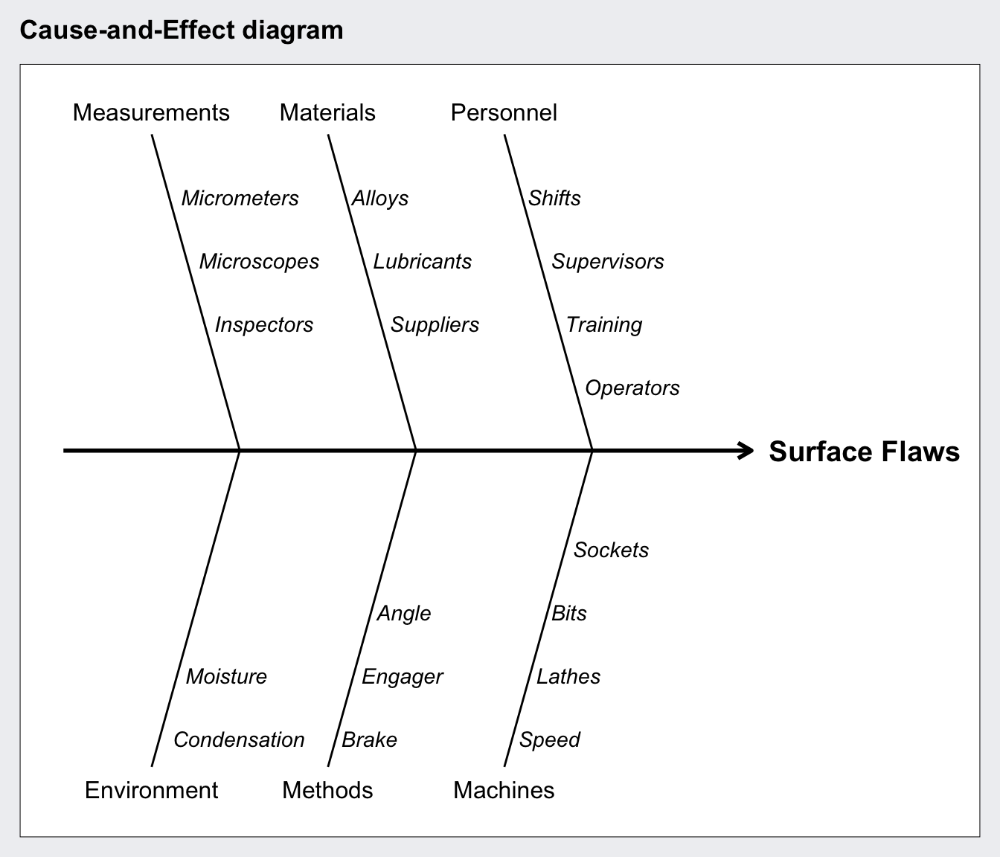

Cause and Effect Diagram
causeEffectDiagram.RdDraw a basic cause and effect diagram.
Arguments
- cause
a list of causes and branches providing descriptive labels (see the example below).
- effect
a string label or the effect.
- title
a character string specifying the main title. Set
title = NULLto remove the title.- cex
a vector of values for the graphical character expansion. The values refer, in order, to branches, causes and effect.
- font
a vector of values for the font to use. The values refer, in order, to branches, causes and effect.
- ...
catches further ignored arguments.
References
Montgomery, D.C. (2013) Introduction to Statistical Quality Control, 7th ed. New York: John Wiley & Sons.
Wetherill, G.B. and Brown, D.W. (1991) Statistical Process Control. New York: Chapman & Hall.
Examples
causeEffectDiagram(cause = list(Measurements = c("Micrometers",
"Microscopes",
"Inspectors"),
Materials = c("Alloys",
"Lubricants",
"Suppliers"),
Personnel = c("Shifts",
"Supervisors",
"Training",
"Operators"),
Environment = c("Condensation",
"Moisture"),
Methods = c("Brake",
"Engager",
"Angle"),
Machines = c("Speed",
"Lathes",
"Bits",
"Sockets")),
effect = "Surface Flaws")
